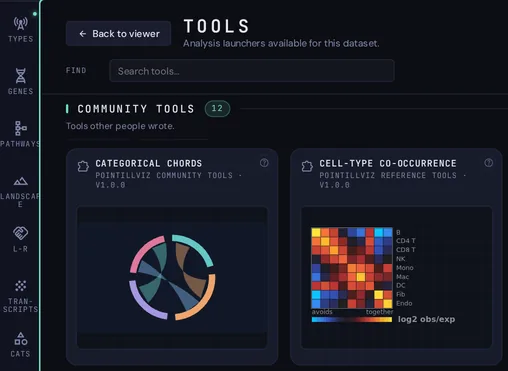
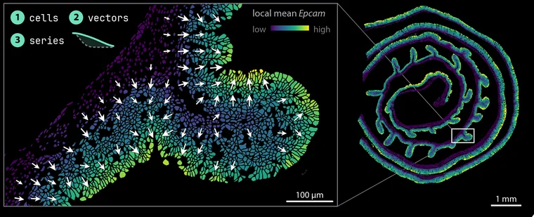

BANKSY niches
Tissue niches from each cell’s expression and its neighbourhood’s, by the BANKSY method.
Python
v1.0.0
PointillViz · Community Tools
Spatial-analysis tools for PointillViz, written in Python or R and published as .pvtool bundles. Installing one adds a launcher to the Tools tab.
Tools run in your own PointillViz viewer, never on this website.
Open Tools → Store, read the tool’s page and press Install.
Download the tool’s .pvtool from its page, then use Install from file in PointillViz.
Either way, you choose where it runs: in an environment of its own (recommended) or in PointillViz’s. pixi builds that environment from the tool’s lock file, and PointillViz runs the gates again before it installs.
Tissue niches from each cell’s expression and its neighbourhood’s, by the BANKSY method.

Explore spatial contacts or shared membership between categorical annotations with count-weighted ribbons and enrichment colors.

Which cell types are found near each other more often than expected by chance.

Whether a cell type is one connected mass or many islands.

How much one extra neighbour of type B changes the odds a cell is type A, holding every other type’s neighbour count fixed.

Where one gene forms clusters of high or low expression.

Whether two cell types meet along one front or in specks.

How crowded the tissue is around every cell.

Niches from the mix of cell types around each cell, fitted by a Gaussian mixture with mclust in R.

How mixed each cell’s neighbourhood is, and who sits next to whom.

At what distance cell type B accumulates around cell type A.

Which cells one cell type seals off from the rest of the tissue.

Which way a quantity increases across the tissue, as arrows over the section. Gene, cell type or any annotation column — with every arrow that could be noise removed.
How clustered each cell type is, at every length scale.
Try a broader search, or clear the tag filter.


An installed tool runs on your computer with the privileges of whoever started PointillViz, like any script you download. The gates report what a tool reaches for; they cannot stop it, and passing them says nothing about whether its code is safe. Each tool’s page links to its source in the public registry: read it before you install.